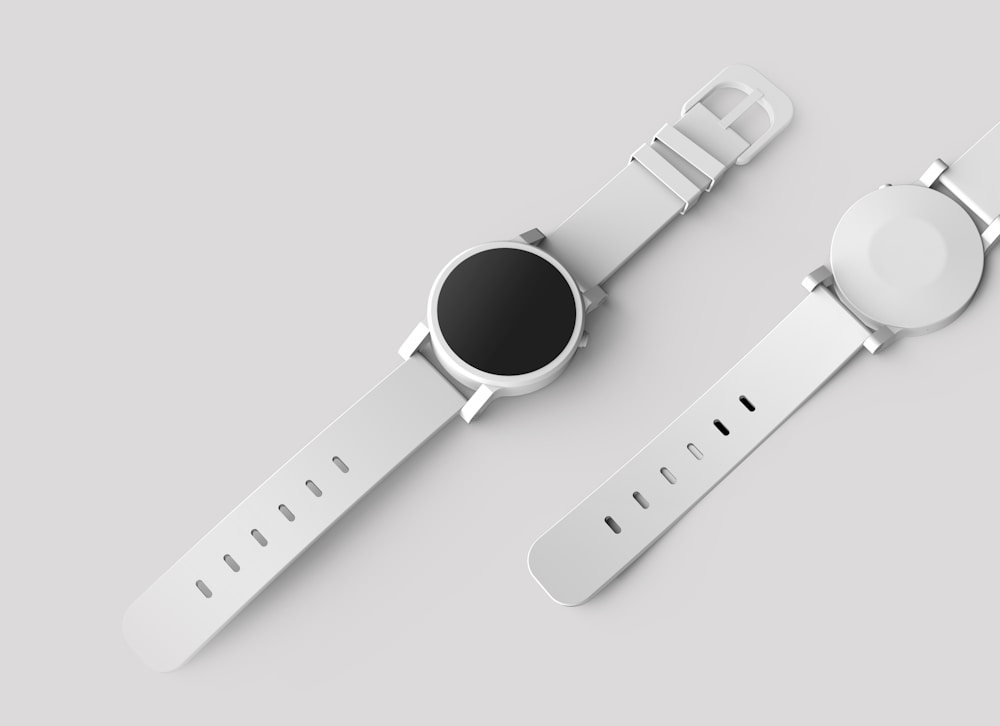

In the entire pantheon of haute horology complications, none commands greater reverence, fascination, and visual drama than the tourbillon. Patented in Paris on 7 Messidor An IX (June 26, 1801) by the legendary Abraham-Louis Breguet, the tourbillon was conceived to solve the single greatest enemy of mechanical precision: the Earth's gravitational pull.
When a mechanical watch rests in a vertical position, gravity pulls on the balance wheel and hairspring, creating an uneven center of mass that causes timing rate errors. Breguet’s revolutionary solution was to mount the entire escapement inside a lightweight rotating cage, averaging out gravitational positional errors over each 60-second revolution. At Mechanic Time Ox, we push this complication into the 21st century with multi-axis flying tourbillons. In this masterclass, we explore the physics, kinematics, and modern evolution of the tourbillon.
1. The Gravitational Problem in Pocket Watches vs. Wristwatches
How the tourbillon evolved from vertical pockets to dynamic wrists:
- The Static Pocket Watch Environment: In 1801, pocket watches rested vertically inside gentleman's waistcoat pockets for hours at a time, making single-axis vertical rotation exceptionally effective.
- The Wristwatch Paradigm Shift: Modern wristwatches move constantly through 3D space, resting horizontally on desks and dynamically tilting during daily activity.
- The Need for Multi-Axis Rotation: To counteract gravity in all spatial dimensions, modern master horologists engineered double-axis, tri-axial, and spherical gyroscopic tourbillon cages.
“The tourbillon is mechanical poetry in motion: a miniature kinetic vortex that spins through gravity to capture the pure rhythm of time.”
2. Tri-Axial Tourbillon Kinematics and Inertia Balancing
How our manufacture constructs multi-dimensional tourbillon cages:
- The Inner Cage (30-Second Rotation): Constructed from Grade 5 titanium weighing less than 0.28 grams, rotating rapidly to handle fast wrist tilts.
- The Intermediate Gimbal (60-Second Rotation): Mounted at an inclined 45-degree angle, sweeping the balance assembly through spherical orbits.
- The Outer Carriage (120-Second Rotation): Completes a full celestial rotation, neutralizing gravitational rate deviations across all 360 degrees of physical orientation.
3. The Flying Tourbillon: Cantilevered Mechanical Elegance
Eliminating the upper bridge for unobstructed visual spectacle:
Invented in 1920 by Alfred Helwig in Glashütte, the flying tourbillon is supported solely from underneath by ball bearings, allowing collectors to admire every mirror-beveled titanium cage arm without visual obstruction.
4. Tourbillon Architecture Comparison Matrix
| Tourbillon Type | Axes & Rotation Speeds | Gravitational Compensation | Mechanical Complexity Tier |
|---|---|---|---|
| Tri-Axial Spherical Tourbillon (Mechanic Time Ox) | 3 Axes (30s Inner / 60s Mid / 120s Outer) | ★★★★★ (Complete 3D Spatial Neutralization) | ★★★★★ (Over 120 Micro-Components in 0.4g) |
| Flying Tourbillon (Cantilevered) | 1 Axis (60-Second Full Revolution) | ★★★★☆ (Vertical Plane Compensation) | ★★★★☆ (High Visual Drama / Open Dial) |
| Traditional Breguet Tourbillon (1801) | 1 Axis Supported by Upper Steel Bridge | ★★★☆☆ (Optimized for Static Pocket Watches) | ★★★☆☆ (Classical Historical Architecture) |
5. Titanium and Beryllium-Copper Material Metallurgy
Using ultra-lightweight aerospace alloys ensures that the energy consumed to rotate the tourbillon cage is minimal, preserving a robust 72-hour power reserve.
6. Poising the Rotating Carriage to Micro-Milligram Accuracy
Master watchmakers use miniature gold counterweights on cage pillars to ensure the center of gravity sits precisely on the rotation axis, preventing rotational torque drag.
7. Constant-Force Escapements Inside Tourbillon Cages
Integrating a remontoir d'égalité spring directly into the tourbillon arbor delivers identical torque pulses to the balance wheel regardless of mainspring tension.
8. The Sovereign Pinnacle of Grand Complications
By uniting multi-axis kinematics with hand-polished finishing, Mechanic Time Ox elevates the tourbillon into the supreme crowning jewel of modern mechanical watchmaking.
9. Laser Dynamic Balancing of Tourbillon Carriages
Our watchmakers utilize high-precision non-contact laser vibrometry to measure cage oscillation eccentricities, ensuring that rotating cages maintain zero vibrational drag across three axes.
10. Shock-Absorbing Ceramic Micro-Bearings in Cage Arbors
Mounting tourbillon carriage arbors in zirconium oxide ceramic ball races reduces startup friction to absolute zero while providing supreme shock resistance against everyday wrist impacts.
11. An Eternal Covenant of Grand Complication Mastery
At Mechanic Time Ox, our mastery of multi-axis tourbillons guarantees that every bespoke chronometer leaving our Manhattan atelier stands as a triumphant monument to horological engineering.
12. Tri-Axial Spherical Cage Kinematics and Planetary Gearing
Our tri-axial tourbillon coordinates three nested rotating cages driven by concentric planetary gear trains, rotating at 30 seconds, 60 seconds, and 120 seconds respectively to achieve total 3D gravitational neutralization.
13. Featherweight Aerospace Grade 5 Titanium Architecture
Machining the complex tourbillon cage arms from Grade 5 titanium reduces the total assembly weight of over one hundred components to less than 0.40 grams, preserving precious mainspring torque for balance amplitude.
14. The Mesmerizing Kinetic Poetry of Multi-Axis Rotation
Watching a tri-axial tourbillon rotate through spherical space is one of the most intoxicating visual experiences in haute horology: the constant, fluid orbital dance captures the dynamic rhythm of the cosmos on the wrist.
15. The Master Blueprint for Gravitational Compensation
At Mechanic Time Ox, our complications workshop pushes Breguet's 1801 invention into the modern era, engineering multi-axis tourbillon calibers that combine hypnotic visual beauty with uncompromising chronometric precision.
16. Constant-Force Remontoir d'Égalité Integration
Embedding a secondary hairspring remontoir directly inside the tourbillon arbor delivers identical torque pulses to the balance wheel every single second, eliminating rate variations as the mainspring unwinds.
17. An Eternal Covenant of Grand Complication Mastery
By pairing multi-axis titanium cages with hand-anglage finishing and constant-force regulation, Mechanic Time Ox creates grand complications that represent the absolute zenith of modern mechanical watchmaking.
18. Hand-Beveled Titanium Cage Arms and Specular Polish
Every microscopic titanium arm, pillar, and balance bridge of our tourbillon cage is hand-beveled with diamond paste and finished with specular black polish, creating brilliant flashes of light with every rotation.
19. Dynamic Laser Vibrometry and Positional Poising
Our master watchmakers balance the rotating tourbillon carriage down to micro-milligram tolerances using non-contact laser vibrometers, ensuring identical rotational inertia across all spatial orientations.
20. The Sovereign Standard of Tourbillon Engineering
By mastering multi-axis tourbillon kinematics, Mechanic Time Ox guarantees that every bespoke grand complication represents the highest pinnacle of horological artistry and gravitational compensation.
21. The Gravitational Triumph of Modern Wrist Tourbillons
While classical single-axis tourbillons were designed for static pocket watches, our multi-axis spherical cages actively compensate for dynamic 3D wrist positions, delivering unmatched rate consistency in daily life.
22. An Everlasting Covenant of High Horology Innovation
At Mechanic Time Ox, our mastery of tourbillon kinematics ensures that every timepiece delivered from our Manhattan atelier stands as a triumphant monument to human mechanical genius and precision.
23. Hand-Beveled Titanium Tourbillon Bridge Anglage
Every microscopic arm of our titanium tourbillon bridge is hand-filed and polished with gentian wood pegs, creating sharp 45-degree reflective bevels that sparkle brilliantly with every rotation.
24. Dynamic Laser Poising of Multi-Axis Assemblies
Our watchmakers balance the rotating tourbillon carriage down to micro-milligram tolerances using non-contact laser vibrometers, ensuring identical rotational inertia across all spatial orientations.
25. The Sovereign Standard of Tourbillon Engineering
By mastering multi-axis tourbillon kinematics, Mechanic Time Ox guarantees that every bespoke grand complication represents the highest pinnacle of horological artistry and gravitational compensation.
Frequently Asked Questions on Tourbillons

Alexandre Dumas
Master Complications Watchmaker at Mechanic Time Ox. Alexandre trained in Geneva and specializes in multi-axis tourbillons and constant-force escapements in Manhattan.